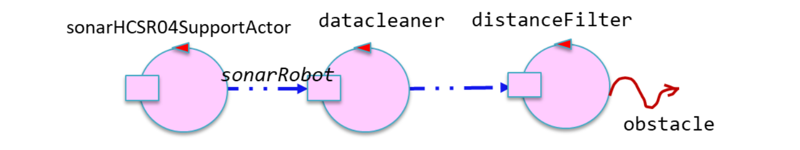
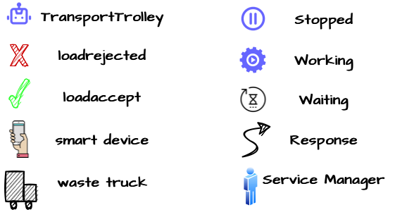
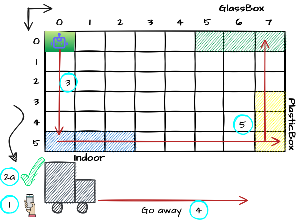
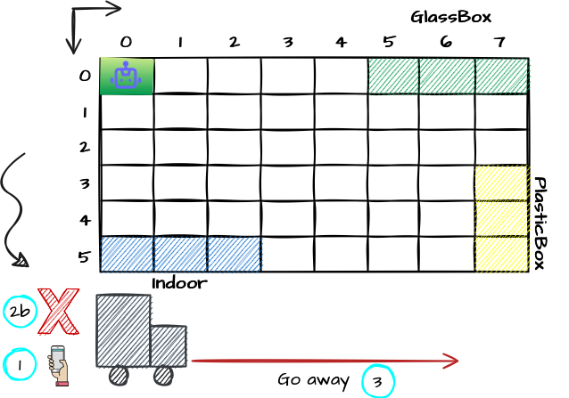
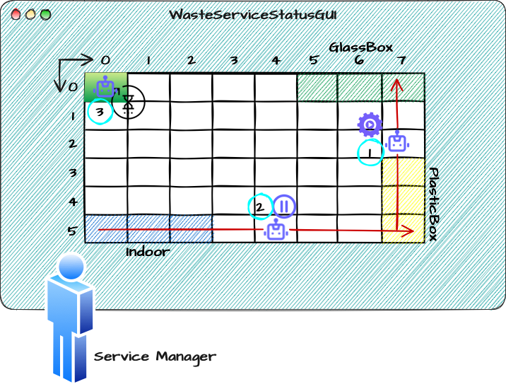
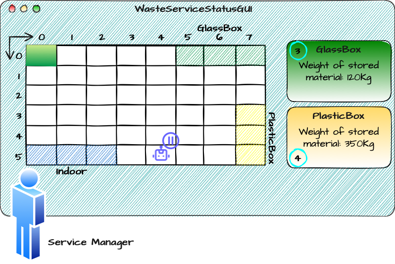
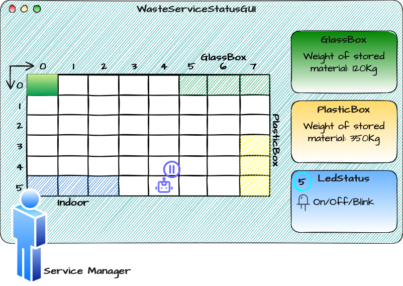

Introduction
Requirements
Requirement analysis
Formalization of the requirements
To formalize the requirements we will use the constructs of the Kotlin language.
Tuttavia, alcuni requisiti introducono un
Service Area
A conventional rectangular room whose dimension are known, free of internal obstacles and bordered by solid walls. We can formalize the room as a rectangle of size "val serviceAreaLength : Floatval serviceAreaWidth : Float
PlasticBox
It can be formalized using:
- constant,
MAXPB , to indicate the maximum container capacity - variable,
currWeightPb , expressing the current weight of the plastic contained in the container.
val MAXPB : Floatvar currWeightPb : Float
GlassBox
It can be formalized using:
- constant,
MAXGB , to indicate the maximum container capacity - variable,
currWeightGb , expressing the current weight of the glass contained in the container.
val MAXGB : Floatvar currWeightGb : Float
Deposit Action
Represents a sequence of actions performed by the- pick up a "waste load" from "waste truck" which is located in
INDOOR . (From now on we will refer to this microaction asPickingup ) - move the load from
INDOOR to appropriate container (PLASTICBOX oGLASSBOX ). - storing the load in the container. (From now on we will refer to this microaction as
Droppingout )
Sonar
It is a sensor 'HC-SR04'. The client provides us with the following software (SonarAlone.c), which makes available a data generator(measured distance) on the output deviceWe are also provided with software related to Sonar in unibo.sonarqak22
We formalize the sonar as a
In particular, the sonaractivate and sonardeactivate commands are used to turn sonar on and off, while the sonar event is output either from sonarSimulator or from sonardatasource, and then sent to the next actor of the pipe.Dispatch sonaractivate : info(ARG)Dispatch sonardeactivate : info(ARG)Event sonar : distance(V)
The architecture provided by the client is of the following type:

The actor distanceFilter filters and sends to the next actor only events of type obstacle: obstacle (distance) when the detected distance is less than a fixed distance defined later (
Led
- Led Off: when the Transport Trolley is in HOME.
- Led On: when the Transport Trolley is stopped (when distance detected
DLIMIT ) - Led Blink: when the Transport Trolley is in motion or is unloading/loading material.
It can be formalized using the enumerative:
The service offered by the LED is expressed through a QA actor.... (fare il QAk del led) .enum class LedState { ON, OFF, BLINK }
DLIMIT
When the value measured by Sonar is less than DLIMIT it is expected that:val DLIMIT : Float
- If the robot moves forward it stops its movement and will resume when the distance becomes greater than DLIMIT.
- If the robot is turning, however, it finishes the operation, and will resume later from that "point" when the distance is again greater than DLIMIT.
TruckLoad
Represents the weight, expressed in Kg, of the waste that the waste truck intends to deposit.var truckLoad : Float
Type of the material
Represents the material, Plastic or Glass, of the waste that the waste truck intends to deposit.enum class Material { PLASTIC, GLASS }
Current state of the transport trolley
Indicates the status of theIt can be formalized by an enumerative:
enum class CurrStateTrolley { IDLE, STOPPED, MOVING, PICKINGUP, DROPPINGOUT }
Position of the transport trolley in the room
The client clarified that asTherefore it is possible to formalize this requirement as follows.
enum class TTPosition { HOME, INDOOR, PLASTICBOX, GLASSBOX }
Current state of the led
Indicates the status of theenum class CurrStateLed { ON, OFF, BLINKING }
Deposit request
Represents the request for storage of the material; is sent by the driver of theSince there is no "built-in" construct in Kotlin or other languages "general purpose", to express the concept of
Request storeWaste : storeWaste(MATERIAL, TRUCKLOAD)
Loadaccept
The formalization of this concept can be expressed through the use of the QAk language:
Reply loadaccept : loadaccept(_)
Loadrejected
The formalization of this concept can be expressed through the use of the QAk language:
Reply loadrejected : loadrejected(_)
WasteService
The
To verify the proper functioning of theQActor wasteserviceactorcontext ctxwasteservice {State setupinitial { ... }Goto idleState idle { ... }Transition t0whenRequest storeWaste -> requestEvaluationState requestEvaluation {onMsg (storeWaste : storeWaste(MAT, QUA)){if [# boxState.canStore(requestMaterialToStore, requestWeightToStore) #] { ...replyTo storeWastewith loadaccept : loadaccept(_) }else {replyTo storeWastewith loadrejected : loadrejected(_) } } }Goto idle }
var storeWaste = "msg(storeWaste, request, testunit, wasteserviceactor, storeWaste(PLASTIC, 100),1)"var asw = conn.request(storeWaste) assertTrue(asw.contains("loadaccept"))var storeWaste = "msg(storeWaste, request, testunit, wasteserviceactor, storeWaste(PLASTIC, 1000),1)"var asw = conn.request(storeWaste) assertTrue(asw.contains("loadrejected"))
DDR Robot
- move back and forth along a constant direction
- stopped
- rotate 90° to the right or left
The client provides software able to interface with the
The actor QAk basicrobot.qak of
The basicorobot can execute basic navigation commands by sending messages:
Using these elementary commands the// MOVE = w | s | l | r | h Dispatch cmd : cmd(MOVE)
Request step : step(TIME)Reply stepdone : stepdone(V)Reply stepfail : stepfail(DURATION, CAUSE)
Transport Trolley
The transport trolley must be capable of performing the same actions as the robot DDR, however the software provided by the client
User Stories
In order to make the images that describe the User Stories more understandable, we introduce the following legend:
Store waste
As a waste truck driver:
-
When I arrive in the
Indoor area, I intend to notify my interest in depositing a waste load through a smart device1. I expect theWasteService to provide some tools to specify the type of load (Plastic or Glass) and the weight of the load. I expect to receive a positive (loadaccept )2aor negative (loadrejected )2bresponse. -
If the response is positive (
loadaccept ), I expect thetransport trolley to pick up the waste load3and move it from theIndoor area to the appropriate container5. In any case as soon as thetransport trolley takes the waste load, I free theIndoor area and leave4. -
If the received answer is negative (
loadrejected ), I will free theIndoor area and go away3.

Supervise service-area
As a service-manager, I intend to use the
-
The current state of the
transport trolley (working1, stopped2, idle3) and its position in the room.
 -
The current weigth of the material stored in the two waste-containers 34.
 -
The current state of the Led (off, on, blinking) 5.

Problem analysis
By students:
Name: Annamaria Simonitto, Enrico Valastro, Alessio Reitano
Email: annamaria.simonitto@studio.unibo.it, enrico.valastro@studio.unibo.it, alessio.reitano@studio.unibo.it